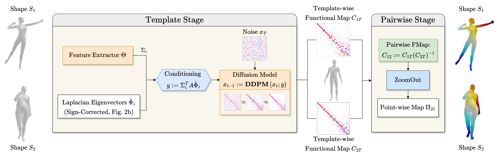

Denoising Functional Maps: Diffusion Models for Shape Correspondence
Accepted at CVPR 2025
-
Aleksei Zhuravlev
University of Bonn -
Zorah Lähner
University of Bonn -
Vladislav Golyanik
MPI for Informatics

We propose DenoisFM, a novel framework for predicting shape correspondences in the form of functional maps using Denoising Diffusion Models.
Abstract
Estimating correspondences between pairs of deformable shapes remains a challenging problem. Despite substantial progress, existing methods lack broad generalization capabilities and require domain-specific training data. To address these limitations, we propose a fundamentally new approach to shape correspondence based on denoising diffusion models. In our method, a diffusion model learns to directly predict the functional map, i.e. a low-dimensional representation for a point-wise map between shapes. We use a large dataset of synthetic human meshes for training and employ two steps to reduce the number of functional maps that need to be learned. First, the maps refer to a template rather than to shape pairs. Second, the functional map is defined in a basis of eigenvectors of the Laplacian, which is not unique due to sign ambiguity. Therefore, we introduce an unsupervised approach to select a specific basis by correcting the signs of eigenvectors based on surface features. Our approach achieves competitive performance on standard human datasets, meshes with anisotropic connectivity, non-isometric humanoid shapes, as well as animals compared to existing descriptor-based and large-scale shape deformation methods.
Method

(a) Functional map prediction using a diffusion model.
For each unique shape in the dataset, we obtain surface features using a feature extractor, as well as a sign-corrected eigenbasis.
Both are used for conditional prediction of the template-wise functional map using a diffusion model.
The pairwise functional maps are obtained through the map composition property, upsampled using ZoomOut, and converted to pointwise maps.
(b) Learned sign correction.
The eigenvectors returned by a numerical eigensolver have random signs.
To select a specific sign, we project the eigenvectors onto the learned correction vector obtained with a feature extractor, and make the projection positive.
The sign correction network is trained in an unsupervised manner: learning to correct eigenvectors that have random signs.
Results
Humans